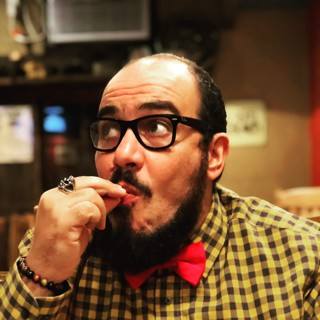

I am an archivist and researcher specialising in memory, oral history, and intangible heritage. I studied cultural anthropology and archival science at the universities of Rome (La Sapienza and Tor Vergata), the Université de Bretagne Occidentale, and the University of Pittsburgh. In 2019 I earned a Ph.D. in M-DEA with a project on the memory of Italian American communities in the Appalachian coalfields. As a member of the Circolo Gianni Bosio or as an independent researcher, I have taken part in research and documentary-preservation projects with, among others, ICPI-MIC, the University of Cluj-Napoca, SIMBDEA, and the University of Brisbane.
Languages: Italian (native) · English (professional) · Spanish (conversational) · French (basic)
Since 2001 I have coordinated the Circolo Gianni Bosio Sound Archive in Rome.

More than twenty years across archives, special collections, and oral history research, between Italy and the United States. Here's a summary; the full path is in the downloadable CV.
School of Computing and Information — specialisation in Library and Information Science, with a focus on archives and special collections.
Internships and collaborations at the Heinz History Center (Pittsburgh), ICPI – Italian Ministry of Culture (Rome), and DollarBank Archives (Pittsburgh): cataloguing, digitisation, and records management.
“Tor Vergata” University, Rome — dissertation on the memory of Italian American communities in the Appalachian coalfields.
Rome — design and content management for ArchivioSonoro, an Italian web portal for folk music.
Special School for Archivists and Librarians, “La Sapienza” University, Rome.
Rome (remotely since 2019).
“La Sapienza” University, Rome.
Arrangement, inventory, and description of archival collections, with particular attention to photographic and audiovisual material and unconventional documentation.
Design and conduct of oral history interviews, transcription, indexing, and curation of sound archives.
Digitisation projects, metadata standards (Dublin Core, EAD), and online access to archival collections.
Curating exhibitions and public events, academic and public-facing publications, teaching and seminar activity.